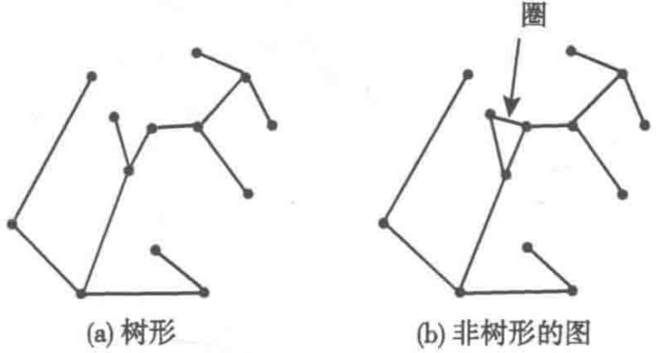
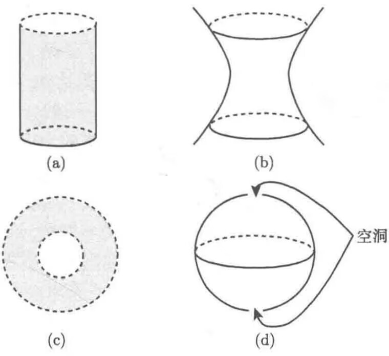
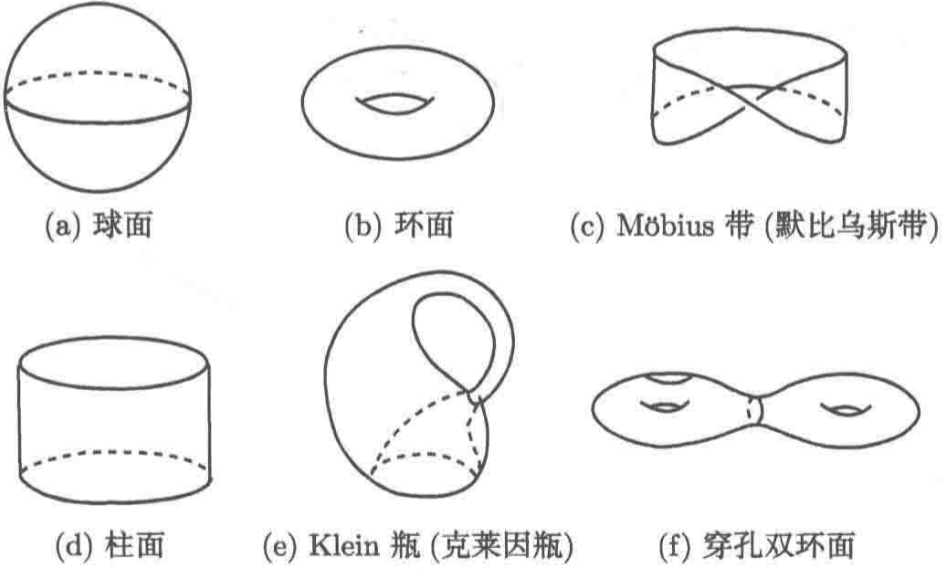

多面体是指按下述意义很好地拼凑在一起的有限多个平面多边形：
若两个多边形相交，它们交于一条公共边.
多边形的每一条边恰是且仅是另一个多边形的边.
这条保证了多边形的封闭性.
还要求对于每个顶点，那些含有它的多边形可以排列成\(Q_1,Q_2,\cdots,Q_k\)，使得\(Q_i\)与\(Q_{i+1}\)有一条公共边（\(1\leq i\lt k\)），而\(Q_k\)与\(Q_1\)有一条公共边.
换句话说，这些多边形拼成围绕该顶点的一块区域.
这个条件排除掉了两个立方体只在一个公共顶点相衔接的情况.
这个条件似乎已经包含了上述的条件.
“凸多面体”简单来说就是表面没有凹进去的多面体.
设\(P\)为满足下列条件的多面体：
则对\(P\)而言：
$$v - e + f = 2$$\(P\)的一组连通的顶点与棱称为图.
连通：任意两个顶点可以用图的一串棱连接.
不含任何圈的图叫树形，记作\(T\).
对于树形，顶点数减去棱树等于1，记作\(v(T) - e(T) = 1\).

Euler定理有好几种证明，选择上述证明的理由有两点：
树形增厚总得到盘形；有圈的图增厚得到有空洞的空间.
换句话说，Euler定理的假设告诉我们，\(P\)在某种意义下看起来就像是变了形的球面.
形变过程可以将多面体任意拉伸、弯曲，但不允许撕裂、不允许不同点粘在一起.
这样所得到多面体的点与球面的点之间的对应就是所谓拓扑等价或同胚的一个例子.
确切地说，就是一对一的连续满映射，且逆映射也连续.
连续映射：一个映射在输入发生微小变化时，输出也只发生微小变化，不会出现突然的跳跃.

拓扑等价的多面体具有相同的Euler数.
这个十分瞩目的结果是现代拓扑学的出发点.
其令人惊奇的地方在于：计算多面体的Euler数时，使用了多面体的顶点数、棱数与面数，这些在拓扑等价之下都不是保持不变的东西.
于是引起人们寻找空间在同胚下不改变的其他性质.
拓扑学所讨论的空间性质，是空间在前面所说的拓扑等价下不改变的性质.
但什么类型的空间是我们感兴趣的？“空间”的确切含义又是什么呢？
先看几个有趣的空间.
作为热心于几何的人，我们的兴趣更偏向于在欧氏空间内自然出现的某些有界图形.
例如，平面上的单位圆周；又如下图中的球面、环面等曲面都是我们所生活的三维空间内实际存在的.

同胚的曲面在我们看来是一样的，应当作同一个的空间来处理.